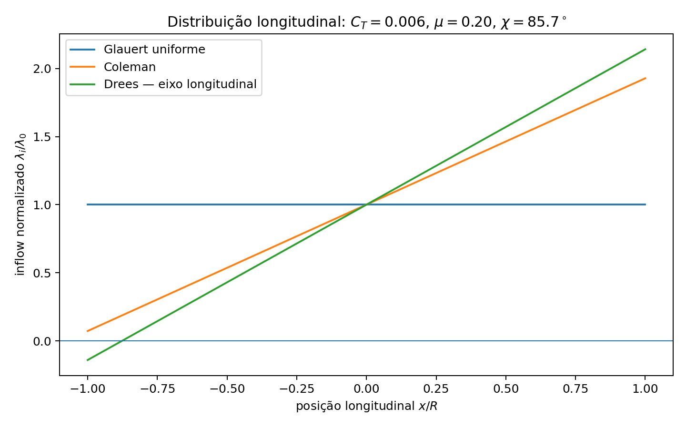
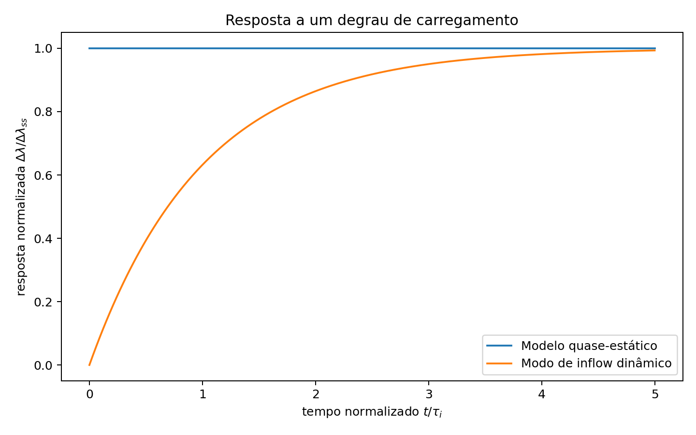
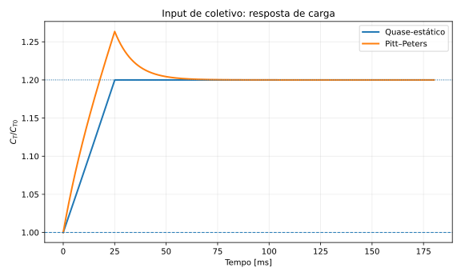
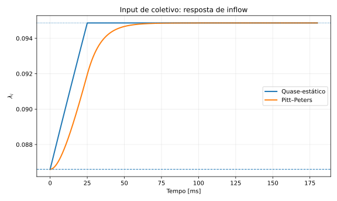
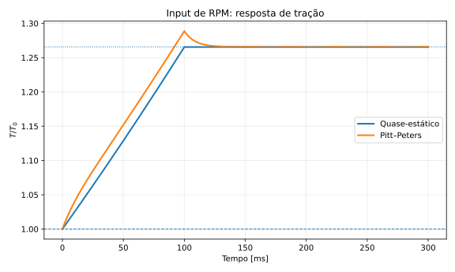
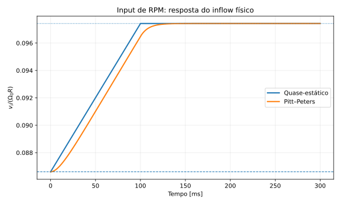

Sumário
- 1. Introdução
- 2. Variáveis e Campo de Inflow
- 3. Glauert: o inflow médio a partir da teoria de quantidade de movimento
- 4. Coleman: gradiente longitudinal produzido pela esteira inclinada
- 5. Drees: gradientes longitudinal e lateral
- 6. Mangler–Squire: distribuição espacial por teoria potencial
- 7. Inflow Dinâmico
- 8. Pitt–Peters: três estados para a dinâmica da esteira
- 9. Peters–He: uma teoria de estados finitos generalizada
- 10. Síntese dos Modelos e Aplicações
- 11. Exemplo Numérico de Inflow Dinâmico
- 12. Conclusão
1. Introdução
O inflow de um rotor é a velocidade induzida pelo próprio rotor no escoamento que atravessa o disco. A dificuldade está em definir qual velocidade representa o fenômeno de interesse. Para desempenho em voo pairado, um valor médio pode ser suficiente. Para calcular batimento, momentos de cubo e distribuição de carga em voo à frente, é preciso representar efeitos locais. Para dinâmica de voo e controle, também é necessário representar a resposta temporal: a velocidade induzida não muda instantaneamente quando a carga do rotor muda.
Os modelos clássicos de inflow diferem pela informação física que representam. A teoria de Glauert [1] fornece o inflow médio compatível com tração e balanço de quantidade de movimento. Coleman, Feingold e Stempin [2] acrescentam o gradiente longitudinal associado à inclinação da esteira, enquanto Drees [3] inclui também um gradiente lateral. Mangler e Squire [4] representam dependência radial e azimutal por teoria potencial. Pitt e Peters [5] introduzem estados diferenciais para os modos de inflow, e Peters, Boyd e He [7], seguidos por Peters e He [8], [9], generalizam a base modal. Esses modelos não constituem uma escala única de precisão: a escolha depende da informação espacial e temporal necessária ao problema.
2. Variáveis e Campo de Inflow
Para um rotor de raio \(R\), área de disco \(A=\pi R^2\) e velocidade angular \(\Omega\), adota-se como velocidade de referência a velocidade de ponta,
\[ V_{\mathrm{ponta}}=\Omega R. \]
Ela fornece a escala para adimensionalizar as velocidades do escoamento e permite escrever as mesmas relações para rotores com diferentes raios e rotações.
A velocidade do ar não perturbado é decomposta em uma componente \(V_t\) no plano do disco e uma componente \(V_n\) normal ao disco. Adota-se \(V_n>0\) no mesmo sentido do fluxo induzido através do rotor, que em voo pairado sustentado aponta para baixo através do disco.
A velocidade induzida média no disco será \(v_i\). As grandezas adimensionais correspondentes são
\[ \mu=\frac{V_t}{\Omega R}, \]
\[ \mu_z=\frac{V_n}{\Omega R}, \]
e
\[ \lambda_i=\frac{v_i}{\Omega R}. \]
O símbolo \(\mu\) representa a velocidade no plano do disco normalizada pela velocidade de ponta, \(\mu_z\) representa a velocidade axial externa normalizada e \(\lambda_i\) representa apenas a contribuição induzida pelo rotor.
Define-se também o inflow total normal no disco,
\[ \lambda=\mu_z+\lambda_i. \]
\(\lambda_i\) representa a parcela criada pelo rotor, enquanto \(\lambda\) representa a velocidade normal total vista pela pá após incluir o movimento da aeronave. As duas grandezas não são intercambiáveis em subida ou descida.
A tração é adimensionalizada como
\[ C_T=\frac{T}{\rho A\left(\Omega R\right)^2}, \]
onde \(\rho\) é a densidade do ar. Essa definição transforma a carga global do rotor em uma quantidade comparável entre configurações diferentes.
Campo de Inflow
A teoria de quantidade de movimento mais simples usa apenas \(v_i\), um valor médio. O rotor real, porém, vê uma distribuição
\[ v_i=v_i(r,\psi,t), \]
onde \(r\) é a posição radial, \(\psi\) é o azimute e \(t\) é o tempo. Em forma adimensional,
\[ \lambda_i=\lambda_i(\bar r,\psi,t), \qquad \bar r=\frac{r}{R}. \]
A expressão permite variação radial, azimutal e temporal do campo. Glauert reduz essa descrição a um valor médio. Coleman e Drees acrescentam os primeiros gradientes azimutais com dependência radial linear, enquanto Mangler–Squire inclui vários harmônicos e funções radiais próprias. Pitt–Peters retém poucos modos espaciais com dinâmica temporal, e Peters–He amplia sistematicamente o conjunto de modos.
Acoplamento entre inflow e carga da pá
Para uma seção de pá a uma distância radial \(r\), a velocidade do ar incidente decompõe-se em uma componente no plano de rotação \(U_T\) e uma componente perpendicular ao plano do disco \(U_P\). Em primeira aproximação,
\[ U_T \approx \Omega r + V_t\sin\psi = \Omega R\left(\bar r + \mu\sin\psi\right) \]
e
\[ U_P \approx V_n + v_i = \Omega R\left(\mu_z + \lambda_i\right). \]
O ângulo de inflow local \(\phi\) é definido por
\[ \phi\approx\tan^{-1}\left(\frac{U_P}{U_T}\right). \]
Para pequenos ângulos,
\[ \phi\approx\frac{U_P}{U_T}. \]
O ângulo de ataque aerodinâmico da seção resulta em
\[ \alpha\approx\theta-\phi, \]
onde \(\theta\) é o passo geométrico local. Um acréscimo de inflow induzido \(\lambda_i\) eleva \(U_P\), amplia o ângulo de escoamento \(\phi\) e, consequentemente, reduz o ângulo de ataque efetivo \(\alpha\) para um passo \(\theta\) constante.
Essa cadeia mostra como o inflow afeta as principais grandezas aerodinâmicas do rotor:
\[ \lambda_i \longrightarrow \phi \longrightarrow \alpha \longrightarrow C_l \longrightarrow \text{carga da pá} \longrightarrow \text{batimento e momentos de cubo}. \]
Além do cálculo da potência induzida, o modelo de inflow entra na distribuição de carregamento que determina a dinâmica e o controle do rotor.
3. Glauert: o inflow médio a partir da teoria de quantidade de movimento
A formulação de Glauert parte de uma idealização de baixa ordem: as pás são substituídas por um disco atuador, uma superfície infinitamente fina que produz um salto de pressão e representa a ação global do rotor sobre o ar, sem resolver a geometria das pás.
A extensão dessa ideia para voo oblíquo aparece no trabalho pioneiro de Glauert sobre o autogiro [1] e estabeleceu a base dos modelos de inflow médio aplicados a helicópteros. Uma apresentação clássica da formulação moderna consta em Seddon e Newman [12] e na revisão comparativa de Chen [10].
Velocidade efetiva na formulação de Glauert
No plano do rotor, o escoamento possui a componente \(V_t\) paralela ao disco e a componente normal \(V_n+v_i\). A formulação de Glauert combina ambas em uma velocidade efetiva,
\[ V_e = \sqrt{V_t^2+\left(V_n+v_i\right)^2}. \]
\(V_e\) é a magnitude da velocidade resultante usada pela formulação de Glauert. Ela não é a componente normal ao plano do rotor.
Transporte de massa efetivo
Para conectar o limite de voo pairado ao de voo à frente rápido, a formulação associa \(V_e\) a uma escala efetiva de transporte de massa em um volume de controle de área característica \(A\):
\[ \dot m_{\mathrm{ef}}=\rho A V_e. \]
Esse passo deve ser entendido como uma hipótese adotada para representar o escoamento oblíquo. O fluxo local através do plano geométrico do rotor depende da componente normal \(V_n+v_i\), enquanto a velocidade \(V_t\), por ser paralela ao disco, não atravessa esse plano.
Velocidade resultante não é velocidade normal
Na aproximação de Glauert, \(V_e\) representa a escala convectiva usada no balanço global de quantidade de movimento. Escrever \(\dot m_{\mathrm{ef}}=\rho A V_e\) não significa que \(V_e\) seja a velocidade normal através da área geométrica do disco.
À medida que \(V_t\) cresce, aumenta a escala convectiva do escoamento que interage com o rotor. Para a mesma tração, a velocidade induzida média necessária diminui, reproduzindo a transição entre o limite de voo pairado e o comportamento de alta velocidade à frente.
Balanço de quantidade de movimento
Na teoria axial de disco atuador, a velocidade adicional em campo distante a jusante é o dobro da velocidade induzida no plano do disco. Glauert preserva esse salto de quantidade de movimento na direção da tração,
\[ \Delta V_n=2v_i, \]
e o combina com a aproximação de transporte efetivo:
\[ T=\dot m_{\mathrm{ef}}\,\Delta V_n = 2\rho A v_i V_e. \]
Substituindo a expressão de \(V_e\):
\[ T = 2\rho A v_i \sqrt{V_t^2+\left(V_n+v_i\right)^2}. \]
Essa é a relação dimensional de Glauert para o inflow médio. Ela deve ser lida como uma extensão de baixa ordem da teoria de quantidade de movimento ao escoamento oblíquo, não como uma identidade local para o fluxo através do plano do rotor.
Adimensionalização
A divisão da equação por \(\rho A(\Omega R)^2\) converte o lado esquerdo em \(C_T\). No lado direito, expressam-se as grandezas em forma adimensional:
\[ v_i=\lambda_i\Omega R, \]
\[ V_t=\mu\Omega R, \]
e
\[ V_n+v_i=\left(\mu_z+\lambda_i\right)\Omega R. \]
Após o cancelamento dos termos \(\Omega R\), resulta em
\[ C_T = 2\lambda_i \sqrt{\mu^2+\left(\mu_z+\lambda_i\right)^2}. \]
Como \(\lambda=\mu_z+\lambda_i\), a mesma equação pode ser escrita como
\[ C_T=2\lambda_i\sqrt{\mu^2+\lambda^2}. \]
Isolando \(\lambda_i\), chegamos à forma conhecida como equação de inflow de Glauert:
\[ \boxed{ \lambda_i = \frac{C_T} {2\sqrt{\mu^2+\left(\mu_z+\lambda_i\right)^2}} } \]
A equação é implícita porque \(\lambda_i\) aparece nos dois lados. O rotor cria inflow, mas o inflow altera a velocidade que atravessa o próprio rotor. O acoplamento físico aparece matematicamente como uma equação não linear.
Limite de voo pairado
Em voo pairado,
\[ \mu=0 \]
e
\[ \mu_z=0. \]
A equação de Glauert se reduz a
\[ C_T=2\lambda_i^2. \]
A solução positiva para o inflow é
\[ \boxed{ \lambda_i=\sqrt{\frac{C_T}{2}} } \]
que é o resultado clássico da teoria de quantidade de movimento para voo pairado.
Em unidades dimensionais, como \(C_T=T/[\rho A(\Omega R)^2]\), a mesma relação produz
\[ v_i=\sqrt{\frac{T}{2\rho A}}. \]
A velocidade induzida em voo pairado cresce com a raiz quadrada da carga de disco \(T/A\). Dobrar a tração no mesmo disco não dobra \(v_i\). Eleva \(v_i\) por um fator \(\sqrt{2}\).
Voo à frente rápido
Quando a velocidade no plano do rotor domina a velocidade normal,
\[ \mu\gg\lambda, \]
podemos aproximar
\[ \sqrt{\mu^2+\lambda^2}\approx\mu. \]
A equação de Glauert torna-se
\[ \lambda_i\approx\frac{C_T}{2\mu}. \]
Em voo à frente, a velocidade tangencial ao disco aumenta a escala convectiva associada ao balanço global de quantidade de movimento. Para a mesma tração, a variação necessária de velocidade normal diminui, e o inflow induzido médio passa a decrescer aproximadamente com \(1/\mu\) quando as demais grandezas são mantidas.
Potência induzida ideal
O disco atuador ideal entrega potência ao escoamento à taxa
\[ P_i=T v_i. \]
Adimensionalizando por \(\rho A(\Omega R)^3\), obtemos
\[ C_{P_i}=C_T\lambda_i. \]
A queda de \(\lambda_i\) com o aumento inicial de \(\mu\) explica por que a potência induzida diminui quando o helicóptero sai do voo pairado e entra em voo translacional, antes que outras parcelas de potência passem a dominar.
Limites do modelo médio de Glauert
A equação de quantidade de movimento fornece apenas o valor médio de \(\lambda_i\) e não determina sua distribuição entre as regiões a montante e a jusante do disco. Em voo à frente, a inclinação da esteira introduz não uniformidade espacial. Assim,
\[ \lambda_i(\bar r,\psi)\neq\lambda_i. \]
Glauert também introduziu uma representação de primeiro harmônico para o campo não uniforme, que pode ser escrita de forma geral como
\[ \lambda_i(\bar r,\psi) = \lambda_0 \left[ 1+\kappa_x\bar r\cos\psi +\kappa_y\bar r\sin\psi \right]. \]
Aqui \(\lambda_0 \equiv \lambda_i\) representa o valor médio obtido da teoria de quantidade de movimento, enquanto \(\kappa_x\) e \(\kappa_y\) são gradientes adimensionais. A formulação estabelece a estrutura espacial de primeiro harmônico, restando determinar os coeficientes a partir da física da esteira. Coleman e Drees propõem relações distintas para determinar esses coeficientes.
4. Coleman: gradiente longitudinal produzido pela esteira inclinada
O relatório de 1945 de Coleman, Feingold e Stempin [2] investigou a distribuição de velocidade induzida ao longo do disco para problemas de vibração e dinâmica de pás. O modelo representa a esteira por uma folha vortical cilíndrica semi-infinita e inclinada em relação ao eixo normal do rotor, o que permite calcular a componente normal da velocidade induzida ao longo do diâmetro longitudinal.
Origem física do gradiente longitudinal
Em voo pairado ideal, a esteira permanece aproximadamente alinhada com o eixo do rotor. Para pontos simétricos a montante e a jusante do centro do disco, a distribuição de distância e orientação em relação aos elementos vorticais da esteira também é simétrica. A contribuição normal integrada da esteira não apresenta, portanto, um gradiente longitudinal de primeiro harmônico.
Em voo à frente, a velocidade no plano do disco convecta a esteira para trás. O eixo da folha vortical deixa de ser normal ao rotor e passa a formar um ângulo \(\chi\) com essa direção. A simetria entre as duas metades do disco é então quebrada. Na integração do campo induzido, os elementos da esteira apresentam distâncias e orientações diferentes quando observados de um ponto a montante ou a jusante. O resultado é uma componente normal de indução maior em uma região do disco e menor na região oposta.
Na convenção adotada neste texto, \(x>0\) aponta para jusante. A solução de Coleman produz inflow maior no lado a jusante e menor no lado a montante. O gradiente não é introduzido como uma correção arbitrária: ele é a aproximação de primeira ordem do campo induzido pela geometria assimétrica de uma esteira inclinada.
O ângulo de inclinação da esteira, ou wake skew angle, é definido cinematicamente por
\[ \tan\chi=\frac{V_t}{V_n+v_i}. \]
Na forma adimensional,
\[ \boxed{ \chi = \tan^{-1}\left(\frac{\mu}{\lambda}\right) } \]
utilizando-se \(\operatorname{atan2}\) em implementação numérica para preservar o quadrante correto.
Para \(\mu=0\), obtém-se \(\chi=0\). À medida que a componente no plano do rotor cresce em relação à componente normal, \(\chi\) aumenta e a assimetria longitudinal do campo induzido se torna mais pronunciada.
Representação de primeiro harmônico
Define-se o eixo \(x\) no plano do disco ao longo da projeção longitudinal da esteira, com \(x>0\) orientado para jusante. O azimute \(\psi\) é medido a partir desse semieixo positivo, de modo que
\[ \frac{x}{R}=\bar r\cos\psi. \]
A aproximação linear para a distribuição de inflow é
\[ \lambda_i = \lambda_0 \left(1+\kappa_x\frac{x}{R}\right). \]
Coleman [2] obtém
\[ \boxed{ \kappa_x=\tan\left(\frac{\chi}{2}\right) } \]
e, nessa idealização puramente longitudinal,
\[ \kappa_y=0. \]
A distribuição sobre o disco torna-se
\[ \boxed{ \lambda_i(\bar r,\psi) = \lambda_0 \left[ 1+\tan\left(\frac{\chi}{2}\right)\bar r\cos\psi \right]. } \]
Relação entre inclinação da esteira e gradiente longitudinal
A solução completa do cilindro vortical inclinado é expressa por Coleman em termos de integrais elípticas. Para uso prático, os autores também apresentam uma aproximação local baseada nos primeiros termos da expansão em série em torno do centro do disco. O valor no centro fornece o inflow médio local e a derivada longitudinal fornece a inclinação do campo. Nessa aproximação, a razão entre o gradiente longitudinal e o valor médio resulta em \(\tan(\chi/2)\) [2].
A identidade
\[ \tan\left(\frac{\chi}{2}\right) = \frac{1-\cos\chi}{\sin\chi} = \frac{\sin\chi}{1+\cos\chi} \]
mostra como o gradiente varia com a geometria da esteira. Para \(\chi\) pequeno,
\[ \tan\left(\frac{\chi}{2}\right) \approx\frac{\chi}{2}, \]
de modo que o gradiente cresce inicialmente de forma aproximadamente linear com o ângulo de inclinação. Quando \(\chi\) se aproxima de \(90^\circ\),
\[ \tan\left(\frac{\chi}{2}\right)\rightarrow1, \]
e a variação longitudinal prevista na borda torna-se da ordem do próprio inflow médio.
Conservação do valor médio no primeiro harmônico
O termo linear não altera a média do disco porque
\[ \frac{1}{A}\int_A x\,dA=0. \]
A média de inflow sobre o disco permanece, portanto,
\[ \frac{1}{A}\int_A \lambda_0 \left(1+\kappa_x\frac{x}{R}\right)dA = \lambda_0. \]
O valor médio \(\lambda_0\) continua representando o balanço global, enquanto \(\kappa_x\) redistribui esse inflow longitudinalmente. Essa separação permite usar Glauert para fechar a magnitude média e Coleman para representar a primeira assimetria espacial.
Efeito sobre a carga da pá
No lado em que o inflow normal aumenta, a componente \(U_P\) também aumenta. O ângulo de escoamento \(\phi\) cresce e reduz o ângulo de ataque efetivo \(\alpha=\theta-\phi\) para o mesmo passo geométrico. O gradiente de inflow produz, portanto, um gradiente correspondente de carregamento aerodinâmico.
Como a pá atravessa esse campo a cada revolução, a distribuição longitudinal aparece como conteúdo harmônico no carregamento e influencia batimento e momentos no cubo. O acoplamento entre esteira e dinâmica de pá surge da alteração local do ângulo de ataque, não de um termo estrutural introduzido separadamente.
Limitações do modelo de Coleman
A dependência radial é linear e a representação retém apenas o primeiro harmônico longitudinal. O modelo não resolve a estrutura detalhada próxima à raiz e à ponta, harmônicos espaciais superiores nem a evolução temporal da esteira. A versão básica também não introduz um gradiente lateral independente.
Coleman deve, portanto, ser interpretado como uma representação espacial de primeira ordem da assimetria criada pela esteira inclinada.
5. Drees: gradientes longitudinal e lateral
O trabalho de J. Meijer Drees [3], publicado em 1949, formulou uma descrição direta do fluxo induzido através do rotor aplicável a problemas de estabilidade, regiões de escoamento perturbado e operações com componentes de velocidade horizontal e vertical. A formulação original abrange regimes complexos, mas a prática de engenharia consolidou como “modelo de Drees” uma parametrização específica para os coeficientes \(\kappa_x\) e \(\kappa_y\) da distribuição de primeiro harmônico.
Coeficientes de primeiro harmônico
A representação preserva a base espacial de primeiro harmônico:
\[ \lambda_i(\bar r,\psi) = \lambda_0 \left[ 1+\kappa_x\bar r\cos\psi +\kappa_y\bar r\sin\psi \right]. \]
Na convenção adotada (\(x/R=\bar r\cos\psi\) longitudinal com \(x>0\) a jusante e \(y/R=\bar r\sin\psi\) lateral com \(y>0\) no semidisco da pá avançante), os coeficientes formulados por Drees [3] são expressos como
\[ \boxed{ \kappa_x = \frac{4}{3} \frac{1-\cos\chi-1.8\mu^2}{\sin\chi} } \]
e
\[ \boxed{ \kappa_y=-2\mu. } \]
A expressão longitudinal também pode ser escrita como
\[ \kappa_x = \frac{4}{3} \left[ \left(1-1.8\mu^2\right)\csc\chi -\cot\chi \right]. \]
As duas formas são algebricamente equivalentes porque
\[ \frac{1-\cos\chi-1.8\mu^2}{\sin\chi} = \frac{1-1.8\mu^2}{\sin\chi} - \frac{\cos\chi}{\sin\chi}. \]
Gradiente longitudinal \(\kappa_x\)
Coleman liga o gradiente longitudinal apenas à geometria da esteira por meio de \(\chi\). Drees mantém a dependência com \(\chi\), mas acrescenta explicitamente \(\mu\). Isso permite que duas condições com inclinação da esteira parecida, mas razão de avanço diferente, não sejam obrigadas a ter exatamente a mesma distribuição.
O primeiro termo do numerador,
\[ 1-\cos\chi, \]
cresce à medida que a esteira se inclina. O termo
\[ -1.8\mu^2 \]
modifica essa tendência com a razão de avanço. O fator \(4/3\) ajusta a amplitude da distribuição resultante.
O coeficiente pertence à parametrização de Drees e não representa uma constante universal da física. A formulação reduz a distribuição tridimensional da esteira a dois gradientes de primeiro harmônico.
Limite de voo pairado
A expressão de \(\kappa_x\) parece indeterminada em voo pairado porque \(\chi\rightarrow0\) produz numerador e denominador tendendo a zero. O limite, porém, é regular.
Para pequeno \(\chi\),
\[ 1-\cos\chi\approx\frac{\chi^2}{2} \]
e
\[ \sin\chi\approx\chi. \]
Quando também \(\mu\rightarrow0\),
\[ \kappa_x \approx \frac{4}{3}\frac{\chi^2/2}{\chi} = \frac{2}{3}\chi \rightarrow0. \]
Ao mesmo tempo,
\[ \kappa_y=-2\mu\rightarrow0. \]
No limite de voo pairado simétrico, o modelo reduz-se ao inflow uniforme.
Limite de esteira quase horizontal
Quando
\[ \chi\rightarrow90^\circ, \]
temos \(\cos\chi\rightarrow0\) e \(\sin\chi\rightarrow1\). Assim,
\[ \kappa_x \rightarrow \frac{4}{3}\left(1-1.8\mu^2\right). \]
Para \(\mu=0.2\), por exemplo,
\[ 1.8\mu^2=1.8(0.04)=0.072, \]
então
\[ \kappa_x\approx\frac{4}{3}(0.928)\approx1.24 \]
se a esteira fosse exatamente horizontal. O valor real fica um pouco diferente porque \(\chi\) não é exatamente \(90^\circ\).
Gradiente lateral \(\kappa_y\)
A diferença operacional de Drees em relação à forma Coleman mais simples é
\[ \kappa_y=-2\mu. \]
A distribuição passa a apresentar também um gradiente lateral. O sinal depende da definição de azimute, do sentido de rotação e da orientação dos eixos, de modo que a convenção deve ser declarada antes de associar o sinal de \(\kappa_y\) ao aumento ou à redução de inflow em cada lado do disco.
A magnitude cresce linearmente com \(\mu\). Para \(\mu=0.2\),
\[ \kappa_y=-0.4. \]
Na borda lateral, o termo pode representar uma diferença de \(40\%\) do inflow médio. Essa assimetria altera o carregamento de primeiro harmônico e, por consequência, o batimento lateral e os momentos do rotor.
Comparação espacial com Glauert e Coleman
A figura abaixo usa \(C_T=0.006\), \(\mu=0.20\) e \(\mu_z=0\). O valor médio é obtido pela equação de Glauert. Coleman e Drees usam esse mesmo valor médio e apenas redistribuem o inflow longitudinalmente.

Figura 1. Distribuição longitudinal de inflow em Glauert, Coleman e Drees para o mesmo valor médio.
Na figura, Glauert aparece como uma reta horizontal porque não contém informação espacial. Em Coleman, o plano de inflow tem gradiente determinado por \(\tan(\chi/2)\). Drees usa outro gradiente longitudinal e acrescenta um termo lateral que não aparece neste corte.
Para o mesmo \(C_T\), os três modelos podem concordar no inflow médio e ainda fornecer distribuições locais diferentes. Essa diferença pode alterar cargas de pá e momentos mesmo quando as grandezas globais permanecem próximas.
6. Mangler–Squire: distribuição espacial por teoria potencial
Coleman e Drees descrevem o campo de inflow como um plano sobre o disco. Essa aproximação retém apenas termos proporcionais a \(r\cos\psi\) e \(r\sin\psi\). O trabalho de Mangler e Squire [4], desenvolvido no contexto da teoria de rotor levemente carregado, segue outro caminho. Em vez de escolher um plano e calibrar seus gradientes, parte-se das equações do escoamento e calcula-se uma distribuição espacial compatível com um carregamento prescrito no disco.
O relatório ARC R&M 2642 [4] assume um rotor levemente carregado e um número infinito de pás. A hipótese de infinitas pás transforma o rotor em um disco contínuo. A hipótese de baixo carregamento permite linearizar as perturbações de velocidade em relação ao escoamento de referência.
Formulação potencial linearizada
Para um escoamento incompressível e invíscido governado pelas equações de Euler, a velocidade total pode ser escrita como uma velocidade uniforme de referência \(\mathbf V_\infty\) mais uma perturbação \(\mathbf u'\):
\[ \mathbf V=\mathbf V_\infty+\mathbf u'. \]
Se a perturbação for pequena,
\[ \lVert\mathbf u'\rVert\ll\lVert\mathbf V_\infty\rVert, \]
os termos quadráticos em \(\mathbf u'\) podem ser desprezados na equação de quantidade de movimento. Para um escoamento potencial,
\[ \mathbf u'=\nabla\phi, \]
onde \(\phi\) é o potencial de velocidade perturbado.
A incompressibilidade exige
\[ \nabla\cdot\mathbf u'=0. \]
Substituindo \(\mathbf u'=\nabla\phi\), resulta
\[ \boxed{ \nabla^2\phi=0. } \]
A distribuição de inflow passa, portanto, a ser um problema de valor de contorno para a equação de Laplace.
Salto de pressão no disco
O disco atuador cria uma diferença de pressão entre suas duas faces. Chamaremos essa diferença de
\[ \Delta p(r,\psi). \]
Na teoria linearizada, o salto de pressão está relacionado ao gradiente do potencial e à perturbação de velocidade induzida. Como a equação de Laplace é linear, a decomposição modal do carregamento produz uma decomposição correspondente da resposta de velocidade nos mesmos harmônicos azimutais.
Escrevemos o carregamento genericamente como
\[ \Delta p(r,\psi) = \Delta p_0(r) + \sum_{n=1}^{\infty} \Delta p_n(r)\cos(n\psi) + \sum_{n=1}^{\infty} \widetilde{\Delta p}_n(r)\sin(n\psi). \]
Por linearidade, o inflow pode ser representado de forma correspondente:
\[ \lambda_i(r,\psi) = \lambda_{i0}(r) + \sum_{n=1}^{\infty} \lambda_{in}^{c}(r)\cos(n\psi) + \sum_{n=1}^{\infty} \lambda_{in}^{s}(r)\sin(n\psi). \]
Em relação a Drees, os coeficientes deixam de ser apenas multiplicadores lineares de \(r\): cada harmônico possui uma função radial própria.
Forma clássica de Mangler–Squire
Uma forma usada para representar a solução original é
\[ \lambda_i = \frac{2C_T}{\mu} \left[ \frac{c_0}{2} - \sum_{n=1}^{\infty} c_n(\bar r,\alpha_d)\cos(n\psi) \right], \]
onde \(\alpha_d\) é o ângulo de ataque do plano do disco em relação ao escoamento incidente (\(\tan\alpha_d = V_n/V_t = \mu_z/\mu\)) e as funções \(c_n\) dependem da família de carregamento prescrita.
A presença de \(1/\mu\) mostra uma limitação estrutural da formulação original. Ela é construída para uma condição em que a velocidade no plano do rotor fornece uma escala dominante. Quando \(\mu\rightarrow0\), a expressão perde validade. Extensões posteriores, como a forma associada a Bramwell, substituem a escala \(2C_T/\mu\) por uma escala baseada no inflow médio, preservando as funções espaciais de Mangler–Squire e evitando a singularidade formal em voo pairado.
Carregamentos Tipo I e Tipo III
Mangler e Squire construíram soluções para formas fundamentais de carregamento do disco. O chamado Tipo I se aproxima de um carregamento elíptico. O Tipo III representa uma distribuição mais parecida com carregamentos de propulsor, reduzindo-se no centro e na borda.
A utilidade da decomposição é linear. Se
\[ \Delta p =a\,\Delta p_I+b\,\Delta p_{III}, \]
então a resposta de inflow é
\[ \lambda_i =a\,\lambda_{i,I}+b\,\lambda_{i,III}. \]
O engenheiro pode combinar famílias de carregamento sem resolver novamente o problema potencial a partir do zero.
Estrutura radial e curvatura espacial
Ao longo de um eixo, a forma linear de Drees é
\[ \lambda_i(x)=\lambda_0\left(1+\kappa_x\frac{x}{R}\right). \]
A derivada espacial é constante:
\[ \frac{d\lambda_i}{dx}=\frac{\lambda_0\kappa_x}{R}. \]
O campo é um plano. Mangler–Squire permite
\[ \frac{d^2\lambda_i}{dx^2}\neq0. \]
Essa curvatura espacial, ausente no modelo linear, permite representar variações próximas à raiz e à ponta e distribuições de carregamento que não podem ser reduzidas a um único gradiente.
Limites da formulação
Mangler–Squire exige especificar o carregamento do disco e resolver uma estrutura espacial mais elaborada, mas continua sendo uma teoria idealizada para rotor levemente carregado. Não resolve o enrolamento livre da esteira vortical, a interação pá-vórtice nem a geometria discreta de um número finito de pás.
Mangler–Squire acrescenta resolução espacial sem introduzir dinâmica temporal. Para um carregamento instantâneo especificado, a formulação calcula a distribuição de inflow correspondente, mas não descreve a trajetória temporal até esse estado.
7. Inflow Dinâmico
Modelos quase-estáticos associam cada condição de carregamento a uma distribuição de inflow de equilíbrio. Essa aproximação elimina o intervalo necessário para que o campo induzido se reorganize após uma mudança de carga. Em um rotor real, a circulação das pás, a vorticidade emitida e o escoamento ao redor do disco evoluem no tempo. A velocidade induzida, portanto, possui dinâmica própria.
Resposta transitória a mudanças de carregamento
Em um rotor operando a rotação constante, um comando rápido de coletivo altera o passo das pás e modifica o carregamento aerodinâmico. Em um modelo completo, a sequência é
\[ \Delta\theta_0 \longrightarrow \Delta C_T(t) \longrightarrow \Delta\lambda_i(t), \]
mas \(C_T(t)\) não é determinado pelo modelo de inflow isoladamente. Ele resulta da aerodinâmica das pás, que depende de passo, velocidade relativa, inflow e, quando representado, movimento da pá.
Para estudar apenas a dinâmica da esteira, é comum prescrever uma mudança nas cargas generalizadas e observar a resposta dos estados de inflow. Nesse caso, o degrau aplicado ao modelo é um degrau em \(C_T\) ou nos momentos aerodinâmicos, não um degrau no próprio inflow.
Entrada e saída do modelo de inflow dinâmico
Em Pitt–Peters, as entradas são cargas generalizadas do rotor, tipicamente \(C_T\), \(C_{M_x}\) e \(C_{M_y}\). As saídas são os estados de inflow. Coletivo, RPM e batimento afetam o inflow apenas por meio do modelo aerodinâmico e dinâmico ao qual Pitt–Peters é acoplado.
Em uma comparação entre inflow quase-estático e dinâmico, o degrau é aplicado à carga que define um novo inflow de equilíbrio. O modelo quase-estático assume esse equilíbrio imediatamente, enquanto o modelo dinâmico evolui até ele em uma escala de tempo finita.
Resposta de primeira ordem do inflow médio
Para representar apenas o mecanismo temporal, o modo uniforme pode ser escrito na forma dimensional
\[ \boxed{ t_i \frac{d\Delta\lambda_i}{dt} + \Delta\lambda_i = K_{CT}\Delta C_T. } \]
A entrada é a variação de \(C_T\) e a saída é a variação do inflow médio. A constante \(t_i\) mede a rapidez com que o campo induzido acompanha uma mudança de carga.
Para um degrau de \(C_T\) aplicado em \(t=0\), a resposta é
\[ \Delta\lambda_i(t) = \Delta\lambda_{i,\mathrm{eq}} \left[ 1-e^{-t/t_i} \right]. \]
Após um intervalo \(t_i\), o inflow percorreu \(63.2\%\) da mudança até o novo equilíbrio. Após \(2t_i\), percorreu \(86.5\%\) e, após \(3t_i\), aproximadamente \(95\%\).
Essa constante de tempo pertence à resposta de inflow a \(C_T\). Ela não representa atraso do próprio comando e não é uma constante de tempo de coletivo, RPM ou batimento.
Massa aparente e evolução da esteira
A dinâmica surge porque alterar o campo induzido exige acelerar uma região de fluido que não está limitada geometricamente ao volume do disco. Em teoria potencial, essa contribuição aparece como massa aparente. Ao mesmo tempo, a nova vorticidade emitida pelas pás é convectada e modifica progressivamente a geometria da esteira.
Pitt e Peters [5] representam esses efeitos por uma matriz de massa aparente e por um pequeno conjunto de estados, sem acompanhar individualmente os filamentos vorticais. A formulação descreve a resposta temporal dos modos de inflow retidos no modelo.
Acoplamento com batimento e dinâmica do rotor
O inflow dinâmico não depende da existência de um grau de liberdade de batimento para ser definido. As equações podem ser integradas para um disco com geometria prescrita se \(C_T\), \(C_{M_x}\) e \(C_{M_y}\) forem fornecidos externamente.
Em um rotor dinâmico, entretanto, batimento e inflow ficam acoplados. O movimento de batimento altera velocidades locais e ângulos de ataque, modifica a distribuição de carga e, portanto, força os estados de inflow. O novo inflow altera novamente os ângulos de ataque e as cargas que governam o batimento. A interação é bidirecional:
\[ \text{batimento} \longrightarrow \text{carregamento} \longrightarrow \text{inflow} \longrightarrow \text{carregamento} \longrightarrow \text{batimento}. \]
O acoplamento torna-se relevante quando modos de inflow e de batimento ocupam faixas de frequência comparáveis. Estudos de dinâmica de voo mostram que a inclusão do inflow dinâmico altera a resposta do modo de batimento e a resposta vertical a comandos rápidos de coletivo [10] [11].
8. Pitt–Peters: três estados para a dinâmica da esteira
O artigo de Pitt e Peters de 1981 [5] desenvolve uma teoria linear não estacionária que relaciona tração, momento de rolagem e momento de arfagem à resposta transitória do campo induzido. A teoria baseia-se em um disco atuador não estacionário e produz um modelo compacto para análise de estabilidade e simulação em tempo real.
Uma formulação voltada a aplicações práticas de engenharia é apresentada por Peters e Ninh [6]. Tratamentos abrangentes e sínteses computacionais modernas constam em Johnson [13] e na documentação do BladeAD.
Três modos espaciais
Pitt–Peters aproxima o inflow por
\[ \boxed{ \lambda_i(\bar r,\psi,t) = \lambda_0(t) + \bar r\lambda_c(t)\cos\psi + \bar r\lambda_s(t)\sin\psi. } \]
Os três coeficientes dependem do tempo. \(\lambda_0\) representa o modo uniforme, enquanto \(\lambda_c\) e \(\lambda_s\) representam os primeiros harmônicos cosseno e seno, associados aos dois gradientes ortogonais do disco segundo a convenção de eixos adotada.
A forma espacial lembra Drees, mas a diferença física está no tratamento dos coeficientes: eles deixam de ser funções algébricas instantâneas de \(\mu\) e \(\chi\) e passam a ser estados diferenciais.
Cargas generalizadas associadas aos modos
Definimos o vetor de estados
\[ \boldsymbol\lambda = \begin{bmatrix} \lambda_0\\ \lambda_c\\ \lambda_s \end{bmatrix}. \]
O carregamento correspondente pode ser organizado como
\[ \mathbf C = \begin{bmatrix} C_T\\ -C_{M_y}\\ C_{M_x} \end{bmatrix}, \]
onde
\[ C_{M_x} = \frac{M_x} {\rho A(\Omega R)^2R} \]
e
\[ C_{M_y} = \frac{M_y} {\rho A(\Omega R)^2R}. \]
A associação é modal: a tração corresponde ao momento espacial de ordem zero da carga, enquanto os momentos de arfagem e rolagem correspondem, respectivamente, a assimetrias longitudinal e lateral. Cada carga generalizada força, assim, o modo de inflow com a mesma simetria espacial.
Essa estrutura é uma redução modal do problema de esteira.
Equações dinâmicas
Uma forma comum das equações é
\[ \boxed{ \mathbf L\mathbf M\dot{\boldsymbol\lambda} + \boldsymbol\lambda = \mathbf L\mathbf C. } \]
A pré-multiplicação da equação por \(\mathbf L^{-1}\) separa os termos de massa aparente e resposta quase-estática:
\[ \boxed{ \mathbf M\dot{\boldsymbol\lambda} + \mathbf L^{-1}\boldsymbol\lambda = \mathbf C. } \]
Nessa forma, os dois blocos físicos ficam explícitos. A matriz \(\mathbf M\) multiplica as derivadas dos estados e representa a massa aparente associada aos modos de inflow. A matriz \(\mathbf L^{-1}\) estabelece a relação quase-estática entre os estados e as cargas, enquanto \(\mathbf L\) mapeia cargas generalizadas em inflow de equilíbrio e incorpora os acoplamentos produzidos pela inclinação da esteira.
Na normalização adotada nas expressões seguintes, o ponto representa derivada em relação ao tempo adimensional \(\tau\). Para RPM constante,
\[ \tau=\Omega t. \]
Assim, uma unidade de \(\tau\) corresponde a um radiano de rotação do rotor. A conversão para segundos deve ser feita somente depois que a escala temporal adimensional do modo tiver sido determinada.
Matriz de massa aparente \(\mathbf M\)
Na normalização clássica,
\[ \boxed{ \mathbf M = \begin{bmatrix} \dfrac{128}{75\pi} & 0 & 0\\[6pt] 0 & \dfrac{64}{45\pi} & 0\\[6pt] 0 & 0 & \dfrac{64}{45\pi} \end{bmatrix}. } \]
A matriz é diagonal nessa base. Isso significa que a massa aparente associada a cada função de forma básica pode ser tratada separadamente antes de introduzir o acoplamento produzido por \(\mathbf L\).
O valor do modo uniforme é diferente dos valores dos modos de primeiro harmônico porque as três funções de forma aceleram distribuições espaciais diferentes de fluido.
Matriz de ganho \(\mathbf L\)
Uma forma clássica é
\[ \boxed{ \mathbf L = \frac{1}{V_{\mathrm{ef}}} \begin{bmatrix} \dfrac{1}{2} & -\dfrac{15\pi}{64} \sqrt{\dfrac{1-\cos\chi}{1+\cos\chi}} &0\\[10pt] \dfrac{15\pi}{64} \sqrt{\dfrac{1-\cos\chi}{1+\cos\chi}} & \dfrac{4\cos\chi}{1+\cos\chi} &0\\[10pt] 0&0&\dfrac{4}{1+\cos\chi} \end{bmatrix}. } \]
A raiz pode ser reconhecida pela identidade de meio ângulo:
\[ \sqrt{\frac{1-\cos\chi}{1+\cos\chi}} = \tan\left(\frac{\chi}{2}\right) \]
para o intervalo usual \(0\leq\chi<\pi\).
A mesma função que aparece em Coleman surge nos termos fora da diagonal de Pitt–Peters porque ambos os modelos carregam a mesma informação geométrica: a inclinação da esteira acopla o modo uniforme ao modo longitudinal.
Acoplamento entre os modos uniforme e longitudinal
Em voo pairado,
\[ \chi=0. \]
Nesse limite,
\[ \tan\left(\frac{\chi}{2}\right)=0. \]
Os elementos \(L_{01}\) e \(L_{10}\) desaparecem. O modo uniforme e o modo longitudinal ficam desacoplados pela simetria da esteira.
Em voo à frente,
\[ \chi>0, \]
e esses elementos tornam-se diferentes de zero. Uma mudança de tração pode então excitar conteúdo longitudinal de inflow, enquanto um carregamento longitudinal pode alterar o componente médio. O acoplamento matemático expressa a perda da simetria que desacoplava esses modos em voo pairado.
Velocidade efetiva
O fator de escala de \(\mathbf L\) usa uma velocidade efetiva
\[ \boxed{ V_{\mathrm{ef}} = \frac{ \mu^2+\lambda(\lambda+\lambda_i) } {\sqrt{\mu^2+\lambda^2}}. } \]
Todas as grandezas dessa expressão são adimensionais. \(\lambda_i\) continua sendo obtido da relação média de quantidade de movimento, enquanto \(\lambda=\mu_z+\lambda_i\).
A função combina o transporte associado à velocidade no plano do rotor com o transporte axial. Ela estabelece a escala com que as cargas produzem inflow na teoria dinâmica.
Regime estacionário
Se as cargas permanecem constantes por tempo suficiente,
\[ \dot{\boldsymbol\lambda}=0. \]
A equação de Pitt–Peters reduz-se a
\[ \boldsymbol\lambda = \mathbf L\mathbf C. \]
Portanto, Pitt–Peters contém um modelo de inflow não uniforme quase-estático como estado de equilíbrio e acrescenta a trajetória temporal até esse estado. Drees fornece diretamente uma distribuição de equilíbrio, enquanto Pitt–Peters acrescenta uma lei de evolução para seus modos principais.
Espaço de estados e escala temporal
Para rotação constante, a normalização de Pitt–Peters usa o tempo adimensional
\[ \tau=\Omega t, \]
de modo que \(\tau\) mede o avanço angular do rotor em radianos. As equações dinâmicas são escritas como
\[ \mathbf M\frac{d\boldsymbol\lambda}{d\tau} + \mathbf L^{-1}\boldsymbol\lambda = \mathbf C. \]
A forma de espaço de estados é
\[ \frac{d\boldsymbol\lambda}{d\tau} = -\mathbf M^{-1}\mathbf L^{-1}\boldsymbol\lambda + \mathbf M^{-1}\mathbf C. \]
Os autovalores desse sistema determinam as escalas temporais dos modos de inflow. No modo uniforme, a entrada é \(C_T\) e a saída é o estado médio de inflow \(\lambda_0\).
Resposta do modo uniforme a um degrau de \(C_T\)
Em voo pairado, ou em uma linearização em que o modo uniforme pode ser tratado isoladamente, a equação assume a forma
\[ \boxed{ \tau_{0,\mathrm{nd}} \frac{d\Delta\lambda_0}{d\tau} + \Delta\lambda_0 = K_{CT}\Delta C_T. } \]
\(\Delta C_T\) é a entrada do modelo e \(\Delta\lambda_0\) é a resposta do inflow. A constante \(\tau_{0,\mathrm{nd}}\) é a constante de tempo da resposta de inflow a uma mudança de \(C_T\).
Para um degrau de \(C_T\), o novo valor de equilíbrio de inflow é atingido segundo uma resposta de primeira ordem:
\[ \Delta\lambda_0(\tau) = \Delta\lambda_{0,\mathrm{eq}} \left[ 1- e^{-\tau/\tau_{0,\mathrm{nd}}} \right]. \]
Quando
\[ \tau=\tau_{0,\mathrm{nd}}, \]
o inflow percorreu \(63.2\%\) da mudança entre o estado inicial e o novo equilíbrio. Em \(2\tau_{0,\mathrm{nd}}\), percorreu \(86.5\%\) e, em \(3\tau_{0,\mathrm{nd}}\), aproximadamente \(95\%\).
A constante pode ser expressa em radianos de rotação ou em revoluções do rotor:
\[ N_{\mathrm{rev},0} = \frac{\tau_{0,\mathrm{nd}}}{2\pi}. \]
Se for necessário convertê-la para segundos, usa-se
\[ t_0 = \frac{\tau_{0,\mathrm{nd}}}{\Omega}. \]
Na figura, a entrada é um degrau em \(C_T\). O modelo quase-estático aplica imediatamente o inflow correspondente ao novo \(C_T\), enquanto Pitt–Peters faz \(\lambda_0\) evoluir até o mesmo equilíbrio com resposta de primeira ordem.

Figura 2. Resposta do inflow médio a um degrau de \(C_T\): modelo quase-estático e resposta dinâmica de primeira ordem.
Acoplamento com dinâmica de voo
Chen e Hindson [11] investigaram a influência do inflow dinâmico na resposta vertical de helicópteros. A introdução de estados de inflow altera o acoplamento entre tração, batimento e movimento do corpo. Em um modelo linearizado completo, os estados de esteira se juntam aos estados de corpo rígido e aos estados do rotor.
A estrutura genérica passa a ser
\[ \begin{bmatrix} \dot{\mathbf x}_{corpo}\\ \dot{\mathbf x}_{rotor}\\ \dot{\boldsymbol\lambda} \end{bmatrix} = \mathbf A \begin{bmatrix} \mathbf x_{corpo}\\ \mathbf x_{rotor}\\ \boldsymbol\lambda \end{bmatrix} + \mathbf B\mathbf u. \]
Eliminar \(\boldsymbol\lambda\) por uma relação algébrica significa eliminar polos e fase associados à esteira. Dependendo da frequência do modo de interesse, essa simplificação pode alterar amortecimento previsto, resposta inicial e margens de controle.
9. Peters–He: uma teoria de estados finitos generalizada
Pitt–Peters adota três funções de forma: uma uniforme, uma longitudinal e uma lateral. Essa base é suficiente quando os fenômenos de interesse podem ser representados nesses três modos, mas não resolve estrutura radial adicional, harmônicos azimutais superiores ou cargas aeroelásticas que exijam mais graus de liberdade.
A teoria de estados finitos desenvolvida por Peters, Boyd e He em 1989 [7], validada experimentalmente por Peters e He [8] e colocada em formulação tridimensional por Peters e He em 1995 [9], resolve esse problema de forma sistemática. O inflow é expandido azimutalmente por uma série de Fourier e radialmente por funções associadas a uma base de Legendre. Cada coeficiente da expansão torna-se um estado dinâmico.
Potencial de aceleração
Para escoamento incompressível e potencial, a perturbação de velocidade satisfaz continuidade e uma forma linearizada da equação de quantidade de movimento. Em vez de trabalhar apenas com o potencial de velocidade, a teoria usa um potencial de aceleração relacionado ao campo de pressão.
O potencial de aceleração é compatível com a representação do rotor como um disco com descontinuidade de pressão. Como o gradiente de pressão governa a aceleração do fluido, a expansão modal do salto de pressão estabelece uma relação entre modos de carregamento e modos de velocidade induzida.
As funções espaciais são escolhidas para satisfazer a estrutura da solução da equação de Laplace em coordenadas adequadas ao disco, e a separação de variáveis conduz a funções de Legendre.
Expansão modal do inflow
Uma forma geral da expansão de Peters–He pode ser escrita como
\[ \boxed{ \lambda_i(\bar r,\psi,t) = \sum_{m=0}^{M} \sum_{j=m+1,m+3,\ldots}^{N_m} \phi_j^m(\bar r) \left[ \alpha_j^m(t)\cos(m\psi) + \beta_j^m(t)\sin(m\psi) \right]. } \]
O índice \(m\) é o harmônico azimutal. O índice \(j\) identifica a função radial permitida para aquele harmônico. As funções \(\phi_j^m(\bar r)\) são funções de forma radiais construídas a partir da base de Legendre. Os coeficientes \(\alpha_j^m\) e \(\beta_j^m\) são os estados de inflow.
O índice \(m\) organiza a resolução azimutal. Para \(m=0\), os estados são axissimétricos e diferem apenas por sua estrutura radial. Para \(m=1\), surgem \(\cos\psi\) e \(\sin\psi\), que contêm os gradientes longitudinal e lateral representados por Pitt–Peters com funções radiais lineares. Para \(m=2\), os termos \(\cos2\psi\) e \(\sin2\psi\) representam padrões com duas máximas e duas mínimas por revolução. Harmônicos superiores refinam progressivamente essa estrutura azimutal.
Estrutura radial da expansão
Dois campos podem ter o mesmo primeiro harmônico azimutal e distribuições radiais diferentes, por exemplo com maior concentração de inflow perto da ponta ou no meio da pá. Um único termo \(\bar r\cos\psi\) não distingue essas distribuições.
A base radial permite escrever
\[ \lambda_{1c}(\bar r) = \sum_j \alpha_j^1\phi_j^1(\bar r). \]
O primeiro harmônico longitudinal deixa de ter um único gradiente radial linear. Ele passa a ter uma forma radial construída por superposição.
Os índices \(m\) e \(j\) controlam dimensões diferentes da expansão: \(m\) define a resolução azimutal e \(j\) define a resolução radial. A truncagem pode ser escolhida separadamente em cada direção.
Projeção modal das cargas
Cada estado recebe a projeção da distribuição de sustentação sobre sua função de forma, em vez de ser forçado pelo mesmo \(C_T\). Uma força generalizada típica possui a forma
\[ \tau_j^{m,c} \propto \int_0^{2\pi} \int_0^1 L(\bar r,\psi) \phi_j^m(\bar r) \cos(m\psi) \,d\bar r\,d\psi, \]
com expressão análoga para o termo seno:
\[ \tau_j^{m,s} \propto \int_0^{2\pi} \int_0^1 L(\bar r,\psi) \phi_j^m(\bar r) \sin(m\psi) \,d\bar r\,d\psi. \]
Essas integrais são projeções modais. Quanto maior a correlação entre a distribuição de carga e uma função de forma, maior a força generalizada associada àquele estado.
Dinâmica de estados finitos
Depois da expansão, a teoria produz um sistema de equações diferenciais de primeira ordem para o vetor de coeficientes. Em forma compacta,
\[ \boxed{ \mathbf M_f\dot{\mathbf q} + \mathbf K_f\mathbf q = \mathbf F_f. } \]
O vetor \(\mathbf q\) reúne os coeficientes \(\alpha_j^m\) e \(\beta_j^m\) mantidos na truncagem. A matriz \(\mathbf M_f\) representa massa aparente e acoplamento dinâmico, \(\mathbf K_f\) representa o operador quase-estático de inflow e \(\mathbf F_f\) contém as projeções do carregamento.
A formulação generaliza a estrutura de Pitt–Peters para uma base com número de estados definido pela truncagem modal.
Truncagem modal
A expansão infinita não precisa ser resolvida inteira. Escolhem-se um harmônico máximo e um número de funções de forma radiais por harmônico. O custo computacional cresce com o número total de estados.
Se apenas dinâmica de corpo rígido de baixa frequência importa, poucos modos podem ser suficientes. Se o objetivo inclui vibração, aeroelasticidade ou distribuição detalhada de carga, mais modos podem ser necessários.
A ordem do modelo é ajustada pelo número de harmônicos azimutais e funções radiais retidos na truncagem, sem alterar a formulação básica.
Relação com Pitt–Peters
Pitt–Peters corresponde a uma truncagem de três estados da formulação de estados finitos, com funções de forma equivalentes a
\[ 1, \qquad \bar r\cos\psi, \qquad \bar r\sin\psi. \]
Peters–He substitui esse conjunto fixo por
\[ \{\phi_j^m(\bar r)\cos(m\psi), \phi_j^m(\bar r)\sin(m\psi)\}. \]
A relação entre as duas formulações pode ser expressa como
\[ 3\ \text{estados escolhidos} \longrightarrow N\ \text{estados gerados sistematicamente}. \]
O trabalho de 1989 [7] mostra que a teoria de estados finitos recupera, em limites assintóticos apropriados, resultados associados a inflow dinâmico, Prandtl–Goldstein, Theodorsen, Loewy e à teoria combinada de elemento de pá e quantidade de movimento. Essas correspondências situam a formulação em relação a teorias clássicas de aeromecânica de asas rotativas.
10. Síntese dos Modelos e Aplicações
Os modelos podem ser comparados pelo tipo de informação física que representam e pelo problema de engenharia a que se destinam.
| Modelo | Valor médio | Não uniformidade espacial | Dinâmica temporal | Estrutura radial | Uso típico |
|---|---|---|---|---|---|
| Glauert | Sim | Não, na forma de quantidade de movimento uniforme | Não | Não | Desempenho e equilíbrio médio |
| Coleman | Sim, herdado de quantidade de movimento | 1º harmônico longitudinal | Não | Linear | Cargas e equilíbrio com esteira inclinada |
| Drees | Sim, herdado de quantidade de movimento | 1º harmônico longitudinal e lateral | Não | Linear | Cargas e equilíbrio em voo à frente |
| Mangler–Squire | Sim | Vários harmônicos | Não | Não linear | Distribuição espacial com vários harmônicos |
| Pitt–Peters | Sim | Uniforme + dois 1º harmônicos | Sim | Linear nos modos básicos | Dinâmica de voo, controle, aeroelasticidade de baixa ordem |
| Peters–He | Sim | Harmônicos e funções de forma radiais ajustáveis | Sim | Sim | Aeromecânica e aeroelasticidade com ordem modal ajustável |
Desempenho
Para estimativas de potência induzida média em voo pairado ou voo à frente fora de regimes em que a teoria de quantidade de movimento perde validade, Glauert fornece diretamente a variável global necessária. Estados adicionais de esteira não são necessários quando a métrica depende apenas desse valor médio.
Equilíbrio e cargas de pá
Quando o objetivo inclui comando de passo, batimento e momentos médios, a distribuição espacial passa a importar. Coleman ou Drees capturam a primeira assimetria que um modelo uniforme omite. Mangler–Squire torna-se adequado quando a curvatura radial da distribuição influencia a resposta aerodinâmica.
Dinâmica de voo e controle
Se a faixa de frequência do problema é comparável à dinâmica de estabelecimento da esteira, uma relação algébrica de inflow elimina fase e estados físicos. Pitt–Peters acrescenta três estados de inflow e pode ser incorporado diretamente a modelos de espaço de estados.
A revisão de Chen para aplicações de dinâmica de voo e controle [10] relata correlação global favorável do modelo Pitt–Peters de primeiro harmônico nos casos avaliados.
Aeroelasticidade e cargas vibratórias
Aeroelasticidade de rotor exige representar interações entre frequências estruturais, harmônicos de rotação e resposta aerodinâmica não estacionária. Como sistematizado por Johnson [13], três estados tornam-se insuficientes para investigar cargas vibratórias de frequências múltiplas de rotação. Peters–He oferece uma formulação sistemática para expandir a resolução modal.
Fenômenos além dos modelos de baixa ordem
Todos os modelos descritos são reduções de ordem. Fenômenos dominados pela geometria detalhada da esteira podem exigir esteira prescrita, esteira livre ou dinâmica dos fluidos computacional (CFD). A interação pá-vórtice é o exemplo clássico. O campo local depende da posição de filamentos vorticais discretos e da distância entre pá e vórtice. Um primeiro harmônico do disco não contém essa informação geométrica.
Em termos de engenharia, a ordem necessária é aquela que ainda preserva o mecanismo físico dominante para a métrica de interesse.
11. Exemplo Numérico de Inflow Dinâmico
Considere um rotor em voo pairado com
\[ C_{T,0}=0.015, \qquad \Omega_0=800\ \mathrm{rpm}. \]
O inflow inicial de equilíbrio é
\[ \lambda_{i,0} = \sqrt{\frac{C_{T,0}}{2}} \approx 0.08660. \]
No modo uniforme de Pitt–Peters,
\[ M_{00} = \frac{128}{75\pi} \approx 0.5432, \]
e a constante de tempo adimensional local pode ser escrita como
\[ \tau_{\mathrm{PP}} = \frac{M_{00}}{4\lambda_i}. \]
No ponto inicial, isso fornece
\[ \tau_{\mathrm{PP},0} \approx 1.568, \qquad N_{\mathrm{rev},0} = \frac{\tau_{\mathrm{PP},0}}{2\pi} \approx 0.250\ \mathrm{rev}. \]
A 800 rpm, a constante de tempo correspondente é
\[ t_{\mathrm{PP},0} = \frac{\tau_{\mathrm{PP},0}}{\Omega_0} \approx 18.7\ \mathrm{ms}. \]
Se o rotor evolui para \(C_T=0.018\), o inflow final de equilíbrio é
\[ \lambda_{i,1} = \sqrt{\frac{0.018}{2}} \approx 0.09487, \]
e a constante de tempo passa a
\[ \tau_{\mathrm{PP},1} \approx 1.432, \qquad N_{\mathrm{rev},1} \approx 0.228\ \mathrm{rev}, \]
ou, ainda a 800 rpm,
\[ t_{\mathrm{PP},1} = \frac{\tau_{\mathrm{PP},1}}{\Omega_0} \approx 17.1\ \mathrm{ms}. \]
Para fechar o exemplo, adota-se uma forma linear de elemento de pá,
\[ C_T = A\theta_0 + B\lambda_i, \]
com
\[ \frac{B}{A}=-\frac{3}{2}. \]
Assume-se diretamente que um aumento de
\[ \Delta\theta_0 = 1.5^\circ \]
corresponde, em equilíbrio, a
\[ \Delta C_T = 0.003, \]
de modo que o rotor passa de
\[ C_T=0.015 \quad \text{para} \quad C_T=0.018. \]
Nos gráficos seguintes, o modelo quase-estático impõe em cada instante o inflow de equilíbrio correspondente à carga instantânea, enquanto Pitt–Peters conserva a memória temporal da esteira. A diferença entre as duas soluções não está no ponto de equilíbrio final, mas no atraso de fase entre carregamento e inflow durante o transiente.
Input de Coletivo em Rampa
No primeiro caso, aplica-se um comando de coletivo com taxa
\[ \dot\theta_0 = 60^\circ/\mathrm{s}, \]
até completar
\[ \Delta\theta_0 = 1.5^\circ. \]
A duração da rampa é
\[ t_{\mathrm{rampa},\theta} = \frac{1.5^\circ}{60^\circ/\mathrm{s}} = 25\ \mathrm{ms}. \]
Como a rotação permanece constante, a comparação pode ser feita diretamente em \(C_T/C_{T0}\) e em \(\lambda_i(t)\). No modelo quase-estático, carga e inflow percorrem a sequência de estados de equilíbrio determinada pelo pitch. Com Pitt–Peters, o pitch cresce em uma escala temporal comparável à da esteira e o inflow permanece temporariamente abaixo do valor quase-estático. Isso reduz o ângulo de inflow, aumenta o ângulo de ataque efetivo das pás e faz o carregamento crescer mais do que cresceria se a esteira pudesse se reorganizar instantaneamente.

Figura 3. Resposta de \(C_T/C_{T0}\) a uma rampa de coletivo de \(60^\circ/\mathrm{s}\) até \(\Delta\theta_0=1.5^\circ\). A legenda é mantida dentro da área do gráfico; os símbolos dos eixos seguem a mesma notação usada no texto.
O máximo ocorre aproximadamente quando a rampa termina. Nesse instante, o coletivo já atingiu o valor final, mas o inflow ainda não atingiu o novo equilíbrio. No modelo deste exemplo,
\[ \frac{C_{T,\max}}{C_{T,0}} \approx 1.264, \]
ou
\[ C_{T,\max} \approx 0.01895. \]
A partir daí o pitch permanece constante, enquanto o inflow continua aumentando. O crescimento de \(\lambda_i\) reduz o ângulo de ataque efetivo e conduz \(C_T\) do pico transitório até
\[ C_{T,\infty}=0.018. \]
Esse overshoot não foi introduzido por uma dinâmica artificial de \(C_T\); ele resulta diretamente do atraso do campo induzido em relação ao coletivo. O mesmo mecanismo aparece em estudos clássicos de resposta vertical de helicópteros com inflow dinâmico, nos quais comandos rápidos de coletivo produzem uma resposta inicial mais pronunciada quando a esteira é tratada como estado dinâmico [11].

Figura 4. Resposta de \(\lambda_i\) ao mesmo input de coletivo. O modelo quase-estático assume o valor de equilíbrio compatível com o carregamento instantâneo; Pitt–Peters mantém o tempo finito necessário para a reorganização do campo induzido.
A constante de tempo varia durante o transiente porque depende do próprio inflow. No ponto inicial,
\[ N_{\mathrm{rev},0} \approx 0.250\ \mathrm{rev}, \qquad t_{\mathrm{PP},0} \approx 18.7\ \mathrm{ms}, \]
e, no novo equilíbrio,
\[ N_{\mathrm{rev},1} \approx 0.228\ \mathrm{rev}, \qquad t_{\mathrm{PP},1} \approx 17.1\ \mathrm{ms}. \]
A rampa de coletivo dura \(25\) ms, portanto o comando e a reorganização da esteira ocorrem em escalas temporais próximas. Essa proximidade explica por que a separação entre as respostas quase-estática e dinâmica é claramente visível.
Input de RPM em Rampa
No segundo caso, o coletivo permanece fixo e a rotação cresce a
\[ \dot n = 1000\ \mathrm{rpm/s} \]
entre 800 e 900 rpm. A rampa dura
\[ t_{\mathrm{rampa},n} = \frac{100\ \mathrm{rpm}}{1000\ \mathrm{rpm/s}} = 100\ \mathrm{ms}. \]
Para geometria e coletivo fixos, o ponto adimensional de equilíbrio permanece aproximadamente no mesmo \(C_T\). A quantidade mais informativa deixa de ser apenas \(C_T\) e passa a ser a tração dimensional,
\[ T = C_T\rho A(\Omega R)^2. \]
No limite quase-estático, \(C_T\) permanece aproximadamente constante e a tração acompanha diretamente \(\Omega^2\). Com Pitt–Peters, a velocidade induzida física não cresce instantaneamente com a rotação. Durante a aceleração, o atraso de \(v_i\) reduz temporariamente
\[ \lambda_i = \frac{v_i}{\Omega R}, \]
aumentando o ângulo de ataque efetivo e elevando ligeiramente \(C_T\) em relação à solução quase-estática. A diferença aparece como uma pequena elevação adicional de \(T/T_0\) durante a rampa.

Figura 5. Resposta de \(T/T_0\) a uma rampa de rotação de \(1000\ \mathrm{rpm/s}\) entre 800 e 900 rpm. A mesma trajetória de \(\Omega(t)\) é usada nas duas soluções; a separação entre as curvas é produzida apenas pela dinâmica do inflow.
No modelo dinâmico, o máximo ocorre aproximadamente no final da rampa:
\[ \left(\frac{T}{T_0}\right)_{\max} \approx 1.289, \]
enquanto o valor estacionário é
\[ \frac{T_\infty}{T_0} = \left(\frac{900}{800}\right)^2 \approx 1.266. \]
O mecanismo é análogo ao caso de coletivo, mas a interpretação precisa ser feita em termos da tração dimensional. Quando a rampa de RPM termina, a velocidade de ponta já atingiu o valor final, enquanto o campo induzido ainda está atrasado. O crescimento posterior de \(v_i\) aumenta novamente \(\lambda_i\), reduz o carregamento adimensional e leva a tração ao equilíbrio. A existência e a magnitude desse overshoot em um rotor real também dependem da dinâmica do sistema de rotação, da aerodinâmica não estacionária e dos graus de liberdade estruturais; o cálculo aqui isola apenas o efeito do inflow dinâmico.
Para mostrar a evolução física da esteira sem introduzir um salto puramente cinemático causado pela normalização variável, representa-se o inflow como
\[ \hat{\lambda}_i = \frac{v_i}{\Omega_0R}, \]
usando a velocidade de ponta inicial como referência fixa.

Figura 6. Resposta do inflow físico ao input de RPM. A normalização fixa evidencia o atraso do campo induzido durante a aceleração e preserva continuidade na variável representada.
Como o estado adimensional final retorna aproximadamente ao mesmo \(C_T\), a constante de tempo em revoluções permanece
\[ N_{\mathrm{rev}} \approx 0.250\ \mathrm{rev}. \]
Em segundos, porém, a mesma fração de revolução encurta com o aumento de rotação:
\[ t_{\mathrm{PP},800} \approx 18.7\ \mathrm{ms}, \qquad t_{\mathrm{PP},900} \approx 16.6\ \mathrm{ms}. \]
A rampa de RPM dura \(100\) ms, várias constantes de tempo do inflow. Por isso a diferença entre as soluções quase-estática e dinâmica é menor do que no input de coletivo, cuja rampa ocorre praticamente na mesma escala temporal da esteira.
Acoplamento com Batimento em Helicópteros
As duas simulações anteriores tratam o rotor como rígido e isolam o acoplamento entre carregamento e inflow. Em um helicóptero, o batimento adiciona graus de liberdade aeromecânicos que modificam o próprio caminho pelo qual o inflow atua sobre as cargas. O movimento da pá altera velocidades e ângulos de ataque locais, modifica a distribuição de força no disco e, portanto, o inflow; a esteira alterada realimenta as cargas que excitam novamente o batimento.
Esse acoplamento não implica que toda resposta de batimento apresente overshoot. O efeito depende do modo considerado, do Lock number, do carregamento e da relação entre as escalas temporais da pá, da esteira e do corpo rígido. Chen e Hindson [11] mostraram, para a resposta vertical em hover, que o inflow dinâmico pode reduzir a estabilidade do modo de batimento no modelo estudado e, combinado com o modo adicional de inflow, produzir grande overshoot inicial de aceleração vertical após uma entrada abrupta de coletivo. O resultado relevante não é a existência universal de um pico de batimento, mas a alteração dos autovalores, do amortecimento e da fase do sistema rotor-corpo.
Schrage et al. [14] chegaram à mesma conclusão por uma análise modal mais ampla: a inclusão de inflow dinâmico altera sistematicamente as raízes dos modos acoplados, aumentando o amortecimento de alguns modos de batimento de alta frequência e reduzindo o amortecimento de movimentos corpo-batimento. O acoplamento entre estados de inflow e batimento também pode produzir pares de raízes complexas, tornando determinadas respostas mais oscilatórias. A revisão de Gaonkar e Peters [15] mostra que dados experimentais de batimento são melhor correlacionados quando a memória da esteira é incluída na modelagem.
Assim, as Figuras 3 a 6 devem ser interpretadas como um isolamento da dinâmica aerodinâmica de um rotor rígido. Em um helicóptero, a constante de tempo de Pitt–Peters continua caracterizando a memória da esteira, mas as respostas observadas de tração, aceleração e batimento pertencem aos modos do sistema acoplado, não ao inflow considerado isoladamente.
12. Conclusão
Glauert fornece o inflow médio compatível com o balanço global de quantidade de movimento e permanece adequado quando a métrica de interesse é essencialmente global, como desempenho e potência induzida média.
Coleman acrescenta o primeiro gradiente longitudinal produzido pela inclinação da esteira. Drees mantém a mesma estrutura de primeiro harmônico e introduz dependência explícita da razão de avanço e um gradiente lateral. Mangler–Squire amplia a descrição espacial ao permitir harmônicos e distribuições radiais que não ficam restritos a um plano linear.
Pitt–Peters acrescenta dinâmica temporal aos modos uniforme, longitudinal e lateral. As cargas generalizadas do rotor forçam estados de inflow que evoluem com uma escala temporal própria e podem ser acoplados à dinâmica de batimento, corpo rígido e controle. Peters–He generaliza essa formulação para uma base modal de ordem ajustável, com maior resolução radial e azimutal.
A escolha entre esses modelos depende da informação necessária ao problema: valor médio, distribuição espacial de primeira ordem, estrutura espacial de maior resolução ou resposta temporal da esteira.
Referências
[1] Glauert, H., A General Theory of the Autogiro, Aeronautical Research Committee Reports and Memoranda, No. 1111, 1926. Link
[2] Coleman, R. P., Feingold, A. M., e Stempin, C. W., Evaluation of the Induced-Velocity Field of an Idealized Helicopter Rotor, NACA Advance Restricted Report L5E10, NACA Wartime Report L-126, National Advisory Committee for Aeronautics, June 1945. Link
[3] Drees, J. M., A Theory of Airflow Through Rotors and Its Application to Some Helicopter Problems, The Journal of the Helicopter Association of Great Britain, Vol. 3, No. 2, pp. 79–104, 1949. Link
[4] Mangler, K. W., e Squire, H. B., The Induced Velocity Field of a Rotor, Aeronautical Research Council Reports and Memoranda, No. 2642, May 1950. Link
[5] Pitt, D. M., e Peters, D. A., Theoretical Prediction of Dynamic-Inflow Derivatives, Vertica, Vol. 5, No. 1, 1981, pp. 21–34. Link
[6] Peters, D. A., e Ninh, H. Q., Dynamic Inflow for Practical Applications, Journal of the American Helicopter Society, Vol. 33, No. 4, 1988, pp. 64–68. Link
[7] Peters, D. A., Boyd, D. D., e He, C. J., Finite-State Induced-Flow Model for Rotors in Hover and Forward Flight, Journal of the American Helicopter Society, Vol. 34, No. 4, pp. 5–17, 1989. Link
[8] Peters, D. A., e He, C. J., Correlation of Measured Induced Velocities with a Finite-State Wake Model, Journal of the American Helicopter Society, Vol. 36, No. 3, pp. 59–70, 1991. Link
[9] Peters, D. A., e He, C. J., Finite State Induced Flow Models. Part II: Three-Dimensional Rotor Disk, Journal of Aircraft, Vol. 32, No. 2, pp. 323–333, 1995. Link
[10] Chen, R. T. N., A Survey of Nonuniform Inflow Models for Rotorcraft Flight Dynamics and Control Applications, NASA Technical Memorandum 102219, NASA Ames Research Center, Moffett Field, CA, 1989. Link
[11] Chen, R. T. N., e Hindson, W. S., Influence of Dynamic Inflow on the Helicopter Vertical Response, Vertica, Vol. 11, 1987. Link
[12] Seddon, J., e Newman, S., Basic Helicopter Aerodynamics, 3rd ed., John Wiley & Sons, Chichester, 2011. Link
[13] Johnson, W., Rotorcraft Aeromechanics, Cambridge University Press, Cambridge, 2013. Link
[14] Schrage, D. P., Peters, D. A., Prasad, J. V. R., Stumpf, W. F., e He, C., Helicopter Stability and Control Modeling Improvements and Verification on Two Helicopters, AIAA Atmospheric Flight Mechanics Conference, 1988. Link
[15] Gaonkar, G. H., e Peters, D. A., A Review of Dynamic Inflow and Its Effect on Experimental Correlations, Rotorcraft Dynamics 1984, NASA Ames Research Center, 1985. Link